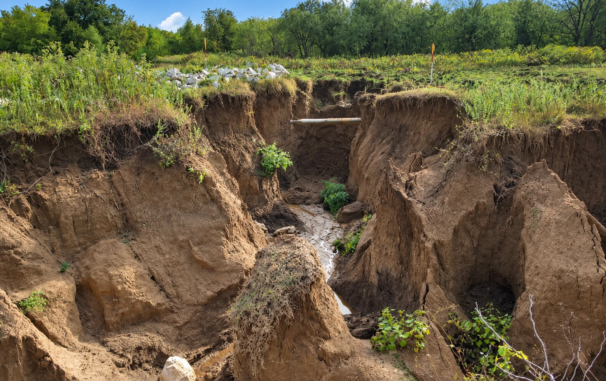
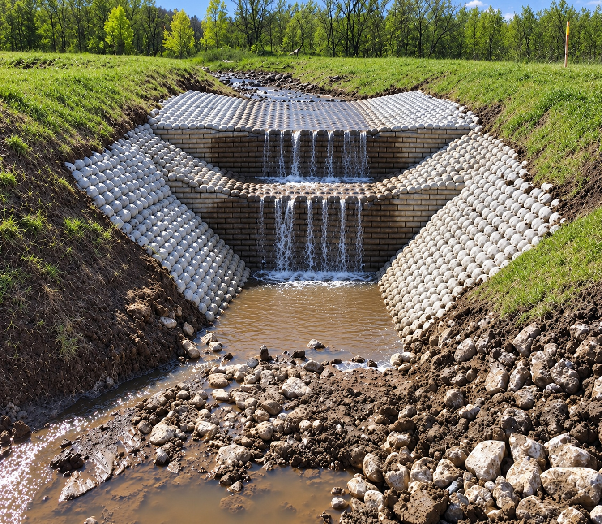

Channel reconstruction
From eroded drainage path to protected channel.
The failed channel is reshaped, widened and protected across the active flow path and side slopes.


Bank and Slope Stabilization
Strength without behaving like a rigid slab.
A site-specific concrete revetment system designed to protect steep banks, head cuts, channels and slopes while accommodating changing field conditions.
Discuss Your SiteFCR in the field
A revetment simply placed over a failing surface cannot be expected to perform. Er-Con evaluates the failure, reconstructs the channel or grade-control geometry and engineers the Flexible Concrete Revetment application around the conditions. These projects show two different failures and how the response was tailored to each location.
Channel reconstruction
The failed channel is reshaped, widened and protected across the active flow path and side slopes.
Head-cut stabilization
Grade-control structures and connected revetment protect the rebuilt channel through the elevation change.


How FCR works
FCR is engineered around the site and installed as a connected concrete protection system. Its configuration distributes erosive forces across the protected area while retaining the ability to flex as the underlying conditions change.
The project-specific configuration defines the protected limits, anchoring and transitions before installation. The connected system is then placed across the prepared area and completed in the field as part of the broader site restoration.
Identify slope geometry, runoff, flow paths, soils, groundwater and the progression of erosion.
Set the limits, thickness, anchoring and configuration required for the site.
Shape the protected area, position the system, complete it in place and install the designed anchoring.
Finish transitions, drainage and surrounding contours so the system works with the broader site.
Why flexibility matters
Provides substantial protection where erosion is concentrated along difficult slopes.
The limits, anchoring and transitions are configured around the actual slope and surrounding site.
A connected flexible system can respond where a single rigid surface may be challenged.
Terraces, vegetation zones and project-specific transitions can be incorporated where appropriate.
The goal is not an online diagnosis
If a steep bank, channel or head cut continues to fail, send us the location, field photos and any available plans or drainage information. Er-Con will evaluate the cause and whether FCR or another stabilization approach fits the site.